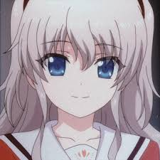
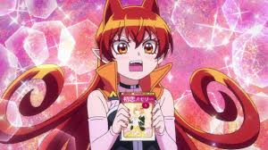

observa unas buenas wafle
Si quieres saber mas de estas wafles haz clic en la imagen
|  | ||
|  |
Sumi sakurasawa
Sumi Sakurasawa (桜さ く ら沢さ わ 墨す み, Sakurasawa Sumi ? ) es una de las principales deuteragonistas femeninas de la serie Kanojo, Okarishimasu . Ella es una estudiante universitaria de primer año y trabaja como novia de alquiler en la compañía de Chizuru Ichinose , donde es una recién llegada a la industria.
Apariencia
Sumi exuda una apariencia suave y gentil con cabello rosa rojizo que se trenza en el lado derecho y ojos rosa rojizo, sin embargo, no hay consistencia en su vestimenta, ya que los cambia según la fecha elegida.
Personalidad
Sumi es una persona extremadamente tímida y tímida que casi nunca habla y cuando lo hace, es solo en un tono suave. Esto muestra cuando conoció a Kazuya Kinoshita y las veces consecutivas que pasaron su tiempo juntos; solo asentir, usar expresiones faciales y lenguaje de señas como formas de comunicación. Por otro lado, muestra una gran cantidad de determinación, a pesar de las barreras de comunicación que obstaculizan su vida social, ya sea convirtiéndose en una novia de alquiler para cambiarse a sí misma o reuniendo el coraje para encontrar compromisos con los problemas, como planificar con anticipación para asegurarse. las cosas salen bien. Como era de esperar de su personalidad introvertida, tiende a pensar demasiado. La mayor parte de su monólogo gira en torno a hablar consigo misma y pensar en todos los escenarios posibles que podrían suceder si cumpliera con una decisión.
Volver a las waflesMei Misaki
Mei Misaki (見崎 鳴 Misaki Mei) es la protagonista femenina de Another y una estudiante de la clase 3-3 de la Escuela Secundaria Yomiyama del Norte, perteneciente a la generación de 1998. Fue nombrada por sus compañeros como "la que no existe" de ese año.
Apariencia
Mei es una joven de quince años de edad de cabello negro cortado a la altura de la barbilla y de una tez extremadamente pálida, casi fantasmal. Mei casi siempre viste el uniforme estándar de la escuela. Su ojo izquierdo está cubierto por un parche, mientras que su ojo derecho es de color rojo en el anime/manga, y negro en la novela original. Aunque en el anime su ojo izquierdo se muestra como verde, en la novela y manga es azul. La razón de su parche se debe a que su ojo izquierda es en realidad una prótesis; un ojo de muñeca que, como lo describe Mei, puede ver cosas que no normalmente no pueden ser vistas. El ojo fue un regalo de su madre, quien, después de que Mei perdiera su verdadero ojo debido a una enfermedad cuando tenía cuatro años, creó para ella un ojo de cristal. Los ojos son de un color diferente porque Kirika sentía que los ojos a juego eran aburridos. A Mei, sin embargo, le desagrada el color de su ojo y lo oculta detrás de su parche.
Personalidad
Inicialmente Mei se muestra como una persona no sociable, siendo dueña de una personalidad tranquila y solitaria, y no queriendo estar cerca de los otros estudiantes. También le dice a Kouichi que se alejara de ella, pero con el paso del tiempo comienza a acostumbrarse a su presencia y no parece importarle tenerlo a su alrededor, con quien pronto traba amistad. Mei también le advierte a Kouichi que tenga cuidado, debido a que "eso" (la maldición) ya podría haber comenzado, lo que indica su preocupación hacia este. Su pasatiempo es dibujar y es miembro del club de arte de la escuela. Mei dice odiar los teléfonos celulares, sosteniendo que le molesta estar conectada a otras personas en todo momento mediante ondas electromagnéticas. En contraste con su comportamiento introvertido, Mei también tiene un lado infantil, tal como se ve en el episodio 8 del anime, donde pasa tiempo construyendo un castillo de arena y se asusta cuando un pulpo se le pega a su mano, llevándola a pensar que iba a comerla. Otro lado infantil de Mei se muestra cuando colocó una flor que encontró en la caja en la antigua sala de clase 3-3 en su cabello y haciendo una broma sobre escuchar gemidos en la biblioteca auxiliar. Cabe señalar que estos rasgos de su personalidad sólo aparecen en el anime y no en la novela original.
Volver a las waflesKaori Miyazono
Kaori Miyazono (宮園 かをり Miyazono Kawori) es un personaje principal del manga y anime Shigatsu wa kimi no uso. Es una violinista de 14 años de edad con una personalidad abrumante que arrastra a Kousei a tocar nuevamente el piano.
Apariencia
Kaori es una chica muy hermosa con una imagen algo desaliñada pero atractiva y muy femenina. Tiene cabello rubio ondulado, cortado en capas que normalmente lleva suelto, (Exceptuando en sus presentaciones y en los primeros capítulos que se muestra recogido en una coleta). Posee ojos azul grisáceo grandes y brillantes. Su altura exacta es de 156 cm mientras que su peso no está confirmado, sin embargo podemos deducir que es delgada. Su aspecto va en decadencia de detalles después de ser hospitalizada.
Personalidad
Mayormente descrita como la personificación de la libertad y expresión, es alegre y atrevida. En general es buena dando consejos a Kousei cuando éste los necesita, vive enamorada de la vida y sobre todo de la música, a quién le es fiel en todo el sentido de la palabra, participando así en competencias por el simple gusto de tocar y no de ganar. Es una chica activa que siempre trata de mantener el ánimo en alto con una visión única sobre la vida. Es caprichosa y algo infantil (razón por la cual llevarse con los niños no se le dificulta en lo más mínimo) también teniendo cambios bruscos de actitud debido a su mal genio en cuyos episodios suele golpear o lanzar cosas hacía Arima. Arima suele también mencionar que encuentra que ella es algo despiadada por no permitir que él se rinda. Su personalidad al entrar en el hospital va decayendo aunque al inicio se muestra bastante alegre. Ella no suele contar sus problemas al resto de las personas, guardándose todo para ella misma sin importar qué, en efecto, ella prefiere ser apoyo para los demás que ser apoyada por otros, sin embargo está demostrado que en un punto ella no pudo con su tristeza llegando al punto de proponerle suicidio conjunto a Kousei y de además llorar sobre su pecho diciendo "No me dejes sola".
Volver a las waflesRukia Kuchiki
Rukia Kuchiki (朽木 ルキア, Kuchiki Rukia ?) es la co-protagonista de Bleach y la desencadenante de la trama en torno a la que gira la serie, al conocer a Ichigo Kurosaki y transmitirle sus poderes de Shinigami. Con el tiempo, Rukia se ha convertido en el personaje Femenino más popular de la serie, así como el pilar en torno al cual gira la que es considerada la saga más brillante de Bleach, aquella que está ambientada en la Sociedad de Almas. También tiene un hermano llamado Byakuya Kuchiki, capitán de la Sexta División y actualmente es la capitana de la Decimotercera División.
Apariencia
Con apenas 1,44 m de altura, Rukia es uno de los personajes de estatura más baja en la serie. De constitución menuda, tiene la piel pálida y el pelo de color negro y suave, cortado por encima de los hombros y siempre dejando que caiga un mechón en medio de su frente, dándole un estilo paralelo al de su hermano adoptivo Byakuya. En los primeros capítulos del anime el color de sus ojos es de un color grisáceo, pero más tarde éstos adquieren una tonalidad entre un azul profundo y un violeta intenso. En la Saga del Agente Perdido, Rukia tiene el cabello más corto dejando caer su grueso mechón en frente. Lo más normal es que Rukia vista con el uniforme propio de los Shinigamis, llamado Shihakushō, y compuesto por un shitagi blanco interior y kosode y hakama de color negro, ceñidos a la cintura mediante un sash blanco. Al contrario que la inmensa mayoría de los Shinigamis, Rukia no ha hecho ningún cambio en su vestimenta, aunque en la saga del shinigami perdido, lleva puesto unos mitones similares a los de Byakuya Kuchiki, solo que en el caso de Rukia, estos mitones le cubren casi la totalidad de los brazos. Además, también lleva atada en el brazo izquierdo la banda que indica su posición como teniente de la decimotercera división. Cuando se encuentra en un Gigai, ha demostrado tener cierta debilidad por los vestidos de Yuzu, la hermana pequeña de Ichigo, lo que le confiere un aspecto más juvenil si cabe. También ha sido una imagen muy frecuente, sobre todo durante los primeros capítulos, ver a Rukia vestida con el uniforme propio del Instituto de Pueblo Karakura, compuesto de una chaqueta y una minifalda de color gris, una camisa blanca y un lazo rojo anudado al cuello. Curiosamente, aparece en muchos videojuegos usando este atuendo. Al final de la historia, Rukia se ha convertido en la capitana de la Decimo Tercera división sucediendo en el cargo a Jūshirō Ukitake quien falleciera. Al asumir el cargo, su Haori de capitán no presenta ninguna modificación visible, su cabello lo tiene actualmente largo, cayendo por encima de su espalda baja.
Personalidad
Al haber crecido en el Rukongai, la zona más pobre de la Sociedad de Almas, Rukia mantiene unas costumbres rudas y poco educadas al hablar con la gente. No obstante, también se percibe la influencia de la familia noble de los Kuchiki en su conducta fría, solitaria en la mayoría de las ocasiones y con buenos modales, así como en su tendencia a ocultar sus problemas personales a sus amigos más cercanos, pero ha demostrado que puede ayudar a sus amigos y siente un gran amor hacia su hermano. Aunque en su presentación le dice a Ichigo que tiene unas diez veces su edad, no está nada acostumbrada a la forma de vida del mundo de los vivos, debido a que la de la Sociedad de Almas es similar a la del Japón del siglo XVIII. Por ejemplo, en un principio ella se vio totalmente incapaz de beber zumo envasado al no saber cómo utilizar la pajita, y debe aprender a hablar en japonés moderno a partir de manga y novelas. Al igual que a Ichigo, a Rukia la acosan intensos sentimientos de pérdida y culpabilidad por hechos que ocurrieron en el pasado. Además, es una persona que aparenta estar totalmente resignada a su destino, sea cual sea, si bien es cierto que existen algunos momentos en los que su determinación se resquebraja, como se vio al cruzarse con el capitán Ichimaru de camino a su ejecución. Rukia es una actriz consumada, capaz de salirse con la suya en un gran número de situaciones, ante la sorpresa de Ichigo, que parece ser el único que se da cuenta de la situación. Le gusta mucho dibujar, y por ello siempre que tiene que dar una explicación o contar algo recurre a dibujos. Un gag recurrente de la serie es precisamente la mala calidad de los dibujos de Rukia, parecidos a los de un niño pequeño (además de dibujar a todos los personajes como conejos u osos de peluche) y las constantes críticas al respecto que recibe por parte de Ichigo, por lo cual, Rukia siempre acaba golpeándolo en la cabeza.
Volver a las waflesNao Tomori
Nao Tomori 「友利 奈緒 Tomori Nao」 es la protagonista femenina de Charlotte. Es una estudiante de primer año y líder del Consejo Estudiantil. Ella a menudo utiliza su videocámara para actividades del Consejo Estudiantil y es una fan de ZHIEND, una banda de la serie.
Apariencia
Nao tiene ojos color zafiro y pelo largo que es plateado y está atado en dos coletas a los lados. Ella se ve a menudo vistiendo su uniforme, que consta de un brazer (camisa) con un lazo amarillo, medias largas negras, botas cafés y una falda plisada marrón.
Personalidad
Nao, forma parte del consejo estudiantil, es conocida por ser muy una buena trabajadora, inteligente y capaz. A pesar de eso, es también un poco narcisista y no le gusta cuando otros personajes son capaces de reconocer sus esfuerzos y logros. Además, se puede llegar a ver en ciertos aspectos el ser alguien la cual puede lanzar contradicciones a la hora de insultar a alguien,como se ve en su utilización de "Ese tipo". En la serie, muchos de los personajes le llegan a mencionar como una persona "calculadora e inteligente" además de claramente mencionarse como alguien directa en sus acciones (Lo cual se puede ver cuando agrede a sus objetivos o hasta los propios miembros del consejo estudiantil.) Aunque aquello se menciona como un cambio generado cuando entro a secundaria (Muchas suposiciones puede apuntar a que esto se debe al mal trato que recibe de las estudiantes de su clase.) Pero después de que Yû regresara de su gran viaje, su carácter se vuelve más sensible y alegre a tal punto de considerarse la novia de Yû a pesar de que él no la recuerda
Regresar a las waflesAmelie Mainbach
Amalie Mainbach es la cuñada viuda y amante de Wendelin Baumeister . Estaba casada con el hermano mayor de Wendelin, Kurt Baumeister , antes de su muerte. Mientras estaba casada con Kurt, tomó su apellido, Baumeister . Sin embargo, después de su muerte, ella decidió volver a usar su apellido de soltera, tanto para ella como para sus hijos, para evitar parte del estigma y el ostracismo asociados con las acciones de su difunto esposo
Persoanlidad
Amalie es una mujer muy amable y de voz suave. Ella es muy consciente de su posición social y de cómo las mujeres no suelen tener voz en los asuntos y, por lo tanto, se mantiene al margen a pesar de ser una de las personas mejor educadas del territorio. Debido a la incapacidad de conectarse a un nivel intelectual con tantos dentro de la Caballería Baumeister , aprecia el contacto con su cuñado Erich, que es tan educado como ella, y su otro cuñado Wendelin, quien a pesar de siendo 12 años menor que ella, tiene muchos más conocimientos que ella. Cuando están fuera del territorio, ella escribe y recibe cartas tan a menudo como lo permiten las caravanas de mercaderes
Volver a las waflesShinobu Kocho
Shinobu Kocho (胡こ蝶ち ょ うし の ぶ ¿ Kochō Shinobu ? ) es un Demon Slayer y el insecto Hashira del Demon Slayer Corps
Apariencia
Shinobu es una chica menuda con piel pálida y ojos grandes de aspecto compuesto que no poseen pupilas, solo una neblina de degradado púrpura, que hace que sus ojos parezcan similares a los de los insectos. Ella tiene el cabello ondulado hasta los hombros que se desvanece del negro al morado oscuro, generalmente con un estilo en la parte posterior de la cabeza en un estilo "yakai-maki" y sujeto con un adorno de mariposa blanco y púrpura. Ella tiene flequillos divididos hasta las orejas que se elevan un poco lejos de su cabeza antes de caer para enmarcar su rostro, con dos mechones más delgados hasta la barbilla debajo de ellos. Shinobu es bastante baja de estatura y ha sido descrita como de complexión pequeña y de aspecto débil, que luego se refuerza cuando dice que no posee suficiente fuerza física para cortarle la cabeza a un Demon como lo hacen las otras Hashira .Zenitsu Agatsuma , Shinobu es tan linda, que fácilmente podría ganarse la vida solo con su apariencia. Shinobu viste el uniforme estándar de Demon Slayer con botones dorados, que consiste en una chaqueta negra de línea recta teñida de color púrpura oscuro y pantalones hakama que están metidos en calcetines tabi con estampado de mariposas alrededor de la parte inferior de sus piernas. También usa un haori blanco que anteriormente perteneció a su hermana mayor, que tiene un patrón de alas de mariposa que se desvanece en un color turquesa y luego en rosa en las mangas y los bordes inferiores que están doblados con un borde punteado en blanco y negro. Lleva sandalias blancas con tiras moradas para el calzado. Cuando Shinobu tenía catorce años, su apariencia era ligeramente diferente. Sus mechones de cabello hasta la barbilla estaban metidos, y tenía un uniforme diferente de Demon Slayer que consistía en botones plateados y un tono más oscuro de púrpura. Ella también lucía un haori blanco liso con él.
Personalidad
Shinobu es bastante relajada, siempre tiene una sonrisa en su rostro independientemente de la situación en la que se encuentre. Parece disfrutar burlarse de los demás y puede ser bastante sádica al respecto, disfrutando sobre todo de meterse con Giyu Tomioka . [4] A pesar de su exterior relajado y su afirmación inicial de querer llevarse bien con los demonios , puede ser bastante cruel con ellos, lo que se ve cuando mata a la hija del demonio araña después de darle falsas esperanzas de ayudarla y también de intentar matar. Nezuko Kamado sin dudarlo. [5] Más tarde, se muestra que tiene un lado más compasivo hacia Tanjiro Kamado y su hermana después de escuchar su historia completa. [6][7] Más tarde se revela que su disposición exteriormente tranquila y tranquila se usa como una máscara, ya que Shinobu tiene un odio intenso por los demonios debido a la pérdida de su hermana, Kanae Kocho , a una edad temprana, junto con la muerte de sus padres, la mayoría de su Tsuguko y las familias de sus aprendices en la Mansión Mariposa . Este odio es tan fuerte que ella se encuentra en un estado casi constante de ira, [8] que Tanjiro Kamado siente cuando los dos individuos mantienen una conversación. Su deseo de venganza la hizo incapaz de vivir la vida normal que su hermana había deseado para ella, en lugar de eso, dedicó toda su energía a derrotar a los Demonios. [9] Durante su batalla contra Doma , Shinobu revela que ella también sufre de un complejo de inferioridad debido a sus habilidades físicas inferiores en comparación con su compañera Hashira, habiendo estado celosa de ellos por poseer cuerpos más altos o más musculosos que ella y maldiciendo a los suyos por no desarrollarse más. para hacerla más efectiva en combate. [10] El yo más joven de Shinobu tenía un comportamiento más descarado y directo como se vio cuando ella y su hermana rescataron a Kanao Tsuyuri , a quien tenía una actitud negativa hacia la crianza. Sin embargo, después de la muerte de Kanae, Shinobu comenzó a comportarse externamente más como su hermana y finalmente desarrolló su sonrisa y actitud para igualarla mientras internamente contenía su rabia
Volver a las waflesEchidna
Echidna (エキドナ, Ekidona), conocida también como la Bruja de la Avaricia (強欲の魔女, Gōyoku no Majo), fue miembro de las Brujas del Pecado hasta que fue sellada por Volcanica. Tras ser liberada del Santuario gracias a Subaru y Emilia, Echidna transfirió su alma en Lewes Meyer, cambiándose el nombre a Omega.
Apariencia
Echidna es una hermosa mujer alta, delgada y de piel blanca. Ella tiene un cabello largo y blanco que le llega hasta las caderas. Las puntas de su pelo también son rectas. Sus ojos son de color negro, y tiene un vestido oscuro con algunas rayas blancas. Ella usa un broche en la parte izquierda de su flequillo. Echidna también mencionó ser lo suficientemente hermosa para que cualquier persona termine fascinada por ella.
Personalidad
La curiosidad de Echidna va hacia lo desconocido y junto con su sed de conocimiento, son las dos cosas que definen su comportamiento. Echidna está interesada en la capacidad de regresar de la muerte de Subaru, tanto así que pensó convertirse en su asesora para grabar y recolectar información de varios puntos en el tiempo creados a partir de su habilidad. Echidna tiene un corazón negro, ya que no entiende los sentimientos de los demás, y puede ser considerada como una psicópata según los parámetros normales. Si se trata de conocimiento, ella no tiene problemas. También sabe emplear las sofismas, mentiras y engaños hacia los demás.
Volver a las waflesAzazel Ameri
Azazel Ameri es el presidente del consejo estudiantil de Babylus . Uno de los pocos humanos convencidos que existen, a pesar de que solo son un mito en el Mundo Demonio , sus teorías se confirman cuando se da cuenta de que Iruma es uno.
Apariencia
Ameri tiene el pelo largo de color rojo anaranjado hasta las caderas y ojos rojos. Ella tiene dos largos mechones anaranjados que sobresalen de su cabello y se asemejan a cuernos u orejas, lo que puede mostrar las emociones de Ameri. Ella es bastante alta, sobresaliendo por encima de la mayoría de los estudiantes y tiene una figura delgada y curvilínea y muchos estudiantes la consideran muy hermosa. Sus uñas son cortas y rojas. Durante el tiempo en que su personalidad cambió, los mechones de su cabeza se hundieron hacia un lado y vestía un uniforme escolar habitual. Sus rasgos faciales eran mucho más suaves y gentiles. Muchos de los estudiantes la encontraron muy linda. A menudo usa una camiseta blanca transparente conectada a una gargantilla negra en su cuello, encima de un chaleco blanco y negro con un escote corazón y un cuello naranja. También lleva una falda naranja y blanca, calcetines blancos hasta los muslos y botas hasta la rodilla.
Personalidad
Ameri se ve inicialmente como una persona bastante estricta, fría e imponente, que disciplina a los demonios que causan problemas en la escuela. Es bastante seria, con un sentido de responsabilidad en sus acciones como presidenta del consejo estudiantil. Debido a esto, puede ser bastante contundente, usando su fuerza e imagen intimidante para poner demonios en su lugar. Puede tener mal genio, pero su enojo solo está dirigido a una amenaza potencial para ella o la escuela. A pesar de esto, ella no abusa de su poder y ha ayudado a varios estudiantes que fueron ex delincuentes a mejorar sus académicos y su posición, ganándose su lealtad eterna. Sin embargo, tiene un lado dulce, que se puede ver en su amor por el manga romántico, específicamente en 'Sweet Time Memory', una historia de romance de la escuela secundaria shoujo. Se sonroja y sonríe al mirar los paneles, aunque no puede leerlos ella misma. Siempre que se menciona este tema, tiende a avergonzarse fácilmente y es probable que no tenga experiencia en el romance. Esto es especialmente cierto en lo que respecta a su vida amorosa. Después de darse cuenta de sus sentimientos por Iruma, desde entonces se ha vuelto más tímida y tímida en su presencia, pero trata de mantener su imagen dura, haciéndola una especie de tsundere a su alrededor, pero consciente de sus sentimientos por él. Ella también ha desarrollado una mordaza constante de malinterpretar algo de lo que él dice como romántico cuando nunca dijo algo así y Ameri se da cuenta de que nunca dijo esas cosas cuando lo señala. Ameri también es un estudiante muy capaz, con una calificación de Vau (6) a pesar de ser solo un segundo año, el rango más alto para un estudiante en toda la escuela. Iruma comentó lo asombrosa que es por ser la presidenta estudiantil a pesar de ser solo una estudiante de segundo año. Durante el Walter Park, ella fácilmente derrotó al demonio rata por sí misma sin ningún daño (aunque sufrió los inconvenientes de su magia). Opera, el sirviente de Sullivan y un poderoso demonio ellos mismos, elogió sus habilidades comentando cuánto potencial tiene para alguien tan joven. Inteligentemente, Ameri también es muy inteligente y perceptiva, ya que fue la única persona en toda la escuela que dedujo correctamente que Iruma es un humano basándose en los pocos logros extraños que logró durante su tiempo allí. Y después de su primer encuentro (y cómo ella percibió que él estaba "intentando" Ameri cree firmemente en el concepto de "ambición"; un objetivo por el que luchar y mejorar. Ella cree que todos deben tener su propia ambición, ayudar a otros a mejorar y luchar por una meta en la vida, como decirle a Iruma que aprenda a encontrar una ambición para sí mismo después de enterarse de que nunca pensó en una. Su ambición es mejorar el entorno de aprendizaje de los estudiantes y hacer de la escuela un establecimiento respetado, antes de ayudar a su padre en su trabajo. Sin embargo, admite que tampoco le importaría tener una panadería o una florería en el futuro. Después de que Opera le ofreció un trabajo como asistente de principios después de graduarse, al principio lo rechazó, pero después de darse cuenta de que estaría viviendo con Iruma en la misma casa (que compara con ser matrimonio), inmediatamente le dijo a Opera que ella ' A pesar de su imagen generalmente estricta e intimidante, Ameri es verdaderamente una persona amable y reflexiva, que a menudo pone a los demás antes que a sí misma. Aunque generalmente castiga a otros demonios por su comportamiento descarado, lo hace con nobles intenciones, principalmente para asegurarse de que los demás en la escuela estén a salvo. Ella tampoco es del tipo que discrimina, ya que incluso después de saber que Iruma es humano, todavía interactúa con él, lo anima a tener una ambición para sí mismo e incluso admitió que se enamoró de él a pesar de saber que es humano. Debido a sus deberes con el consejo estudiantil, Ameri tiene una agenda muy ocupada y rara vez tiene tiempo para sí misma. Cuando lo hace, disfruta pasar tiempo con Iruma y que le lea "Dulces recuerdos" con ella. Aunque ella lo obligó al principio a leerlo (y debido a que Iruma no podía negar las solicitudes de los demás), más tarde aprendió a darle opciones, pero continúa leyéndolas debido a que a él le gusta hacerlo. Además, sus responsabilidades también le hicieron darse cuenta de que antes de conocer a Iruma, al igual que Clara e Iruma, nunca tuvo amigos desde que ingresó a la escuela. Sin embargo, con el tiempo, parece haber formado su propia amistad con Clara, Crocell y Elizabetta durante una fiesta de pijamas solo para niñas, lo que le permitió relajarse y hacerse amiga de ellas. Cuando un miembro del club de fans lanza magia que cambia temporalmente su personalidad, se vuelve muy mansa y tímida. Ella muestra una personalidad más gentil que se pone fácilmente nerviosa por su entorno que incluso se cambió de vestido por lo vergonzoso que era. Esta personalidad estaba dispuesta a renunciar a su puesto como presidenta del consejo estudiantil y ser una estudiante normal mientras estuviera con Iruma. Cuando Iruma le dice que ese deseo está vacío y le recuerda sus ambiciones (algo que ella también le dijo), lentamente recuperó su confianza y volvió a su personalidad original. Uno puede saber qué emoción está teniendo Ameri al mirar sus cuernos / orejas, si están levantados y erectos, ella está confiada, confundida, se quedan abajo a la mitad, conmocionados o sorprendidos, están completamente erectos, y cuando se avergüenza sus cuernos / orejas hacia abajo.
Volver a las wafles